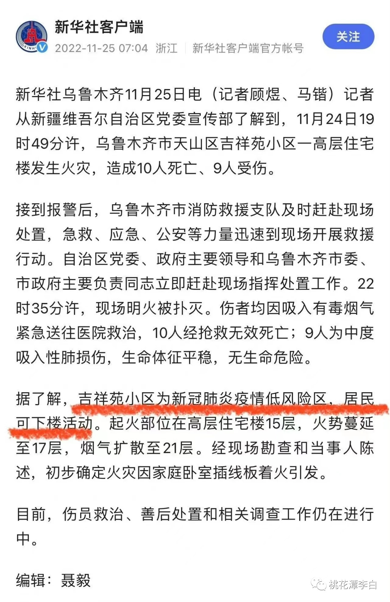

以下内容转载自某公众号，请独立思考，看到最后
查一下全国的各地疫情风险划定，到今天，11 月 25 日，这个小区依然是属于国家规定的高风险区。

这里后来有人说没锁，真相已不可考，请自行判断
以上内容均来自互联网，全文最初来自公众号“桃花潭李白”，后见于某公众号（截图文字字体不一致的部分都是公众号作者补充的内容），再后来就是封删。
分割线
已经本着怀疑的态度看了很多文章、截图，现在转载的这一篇已经是相对来说最为冷静客观的文字和记录了，有煽动情绪嫌疑的唯二截图我看着没什么问题，但还是请大家独立思考。
昨晚看了很愤怒，想了解更多，结果国内搜了一圈没什么消息，遂看了看外面，然后冷静下来了。涉j问题，很多人等着一个机会，去煽动情绪。不说作伪欺诈、传播流言吧，大家都知道有问题，但描述问题的方式不同，给人的感受也是不同的。
举个例子，有网传家门被封，有人逃了出来；有传石墩堵了消防通道，有人说在锯铁柱；有人说封了铁皮导致浓烟（贴图看不出来在什么位置），有人放出截图是被锁的栅栏（同样看不出在什么位置）；有慷概激昂的演讲稿，有以消防员口吻写的针对网络议题的回应，有以xj人自居的公众号其实历史文章跟xj没啥关系，有人精心挑选一些富有感染力的截图......还有很多
所以冷静下来之后是五味杂陈，想说点什么，又怕国人无法独立思考，给虎视眈眈的有心人钻了空子
但是不说，我心难安，特别是现在封杀似乎没那么严了，各式各样的文章涌现，让本就扑朔迷离的真相更加捉摸不定，已然分不清真相
所以我想说，问题肯定有，错了就要认，人民群众的话肯定要讲，也肯定有人会恶意炒作拿这些攻击天朝。只是希望我认识的人，以怀疑的态度，小心求证你看到的所有表述，不论官方通告还是个人文章，包括本文在内。
在水落石出前，谨以此献给这一段令国人心痛的记忆。